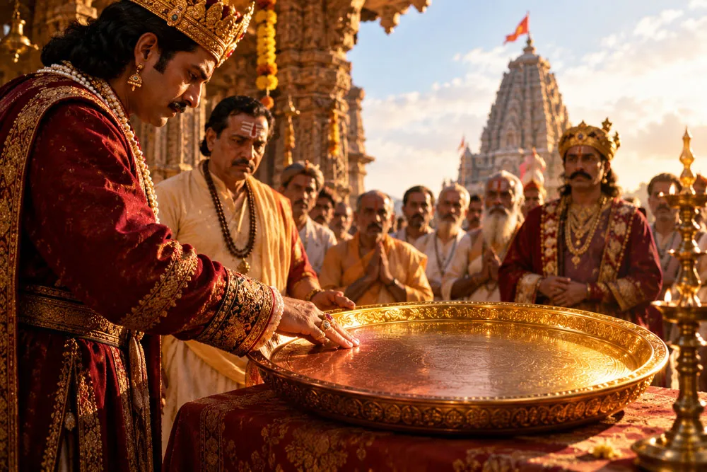

सावन की वह सुबह
सावन का महीना था। शिव मंदिर में सुबह से ही भक्तों का आना शुरू हो गया था। कोई जल चढ़ाने आया था, कोई बेलपत्र लेकर, तो कोई केवल कुछ पल मंदिर के शांत वातावरण में बैठकर अपने मन की बात महादेव से कहने आया था।
मंदिर के गर्भगृह से आती घंटियों की आवाज, धूप और फूलों की सुगंध, पुजारी के मंत्र और भक्तों की श्रद्धा, सब मिलकर वातावरण को अलग ही बना रहे थे। ऐसा लगता था जैसे पूरा नगर कुछ समय के लिए अपने काम-काज भूलकर भोलेनाथ के चरणों में आ गया हो।
किसी को पता नहीं था कि उसी दिन यह मंदिर एक ऐसी कथा का साक्षी बनने वाला है, जिसे लोग लंबे समय तक याद रखेंगे।
आकाश से उतरा सोने का थाल
दोपहर के आसपास मंदिर के प्रांगण में अचानक हलचल हुई। लोगों ने ऊपर देखा तो उन्हें आकाश में एक तेज चमक दिखाई दी। कुछ ही क्षणों में वह चमक नीचे आती हुई दिखाई देने लगी।
देखते ही देखते मंदिर के बीचों-बीच एक चमचमाता हुआ सोने का थाल आकर ठहर गया। उसकी चमक चारों ओर फैल गई और लोग आश्चर्य से उसे देखते रह गए।
तभी मंदिर के ऊपर से एक गंभीर आवाज सुनाई दी, “यह थाल महादेव के सबसे बड़े और सच्चे भक्त के लिए है।”
आवाज शांत हुई तो मंदिर में कुछ पल के लिए बिल्कुल सन्नाटा छा गया। फिर फुसफुसाहट शुरू हो गई। हर कोई सोच रहा था, क्या वह सच्चा भक्त मैं हूँ?
सबसे पहले पुजारी आगे आए
मंदिर के मुख्य पुजारी वर्षों से महादेव की सेवा कर रहे थे। उन्होंने अनगिनत अभिषेक किए थे, भक्तों को पूजा की विधि समझाई थी और अपना जीवन मंदिर की सेवा में लगाया था।
आकाशवाणी सुनकर उन्हें लगा कि शायद यह थाल उन्हीं के लिए आया है। वे आगे बढ़े और बोले, “मैं दिन-रात महादेव का अभिषेक करता हूँ। मैंने अपना जीवन उनकी सेवा में लगाया है। यह थाल मेरा होना चाहिए।”
जैसे ही उनकी उंगलियाँ थाल से छुईं, सोने की चमक गायब हो गई और थाल पीतल का हो गया। पुजारी कुछ क्षण उसे देखते रहे और फिर चुपचाप पीछे हट गए।
राजा ने अपने दान को भक्ति समझा

अब नगर के राजा आगे आए। उन्होंने मंदिर के निर्माण में स्वर्ण दान किया था और कई धार्मिक कार्यों में सहयोग दिया था। लोग उन्हें बड़ा दानी मानते थे।
राजा ने कहा, “मैंने इस मंदिर के लिए स्वर्ण दान किया है। यदि कोई महादेव का बड़ा भक्त है, तो वह मैं हूँ।”
उन्होंने थाल को छुआ और फिर वही हुआ। थाल की चमक चली गई और वह तांबे का हो गया। राजा का आत्मविश्वास कुछ ही क्षणों में शांत हो गया।
अब लोगों के मन में प्रश्न और गहरा हो चुका था, अगर पुजारी और राजा दोनों नहीं, तो फिर वह भक्त है कौन?
एक-एक करके बड़े लोग आगे आते गए
राजा के बाद नगर के कई धनी और प्रतिष्ठित लोग आगे आए। किसी ने बड़ा दान दिया था, किसी ने गरीबों को भोजन कराया था, किसी ने धार्मिक आयोजन करवाए थे और किसी ने वर्षों से पूजा-पाठ किया था।
हर व्यक्ति अपने अच्छे कर्मों की सूची लेकर आया था। लेकिन जैसे ही कोई थाल को छूता, उसकी चमक फीकी पड़ जाती।
धीरे-धीरे लोगों के चेहरे से आत्मविश्वास गायब होने लगा। जो लोग कुछ देर पहले मान रहे थे कि थाल उन्हीं का है, अब चुपचाप भीड़ में वापस खड़े थे।
शायद उस दिन पहली बार कई लोगों ने अपने भीतर झाँककर देखा, क्या भक्ति केवल वह है जो दुनिया को दिखाई देती है?
भीड़ के पीछे खड़ा एक गरीब किसान
मंदिर के एक कोने में एक गरीब किसान चुपचाप खड़ा था। उसके कपड़ों पर खेत की मिट्टी के निशान थे और हाथों पर मेहनत की कठोरता साफ दिखाई देती थी।
वह दिन-रात खेत में मेहनत करता था। कभी फसल अच्छी होती तो घर में खुशी आती, कभी मौसम साथ न देता तो वही मेहनत चिंता में बदल जाती। मंदिर आना भी उसके लिए रोज संभव नहीं था।
फिर भी महादेव उसके जीवन से दूर नहीं थे। वह खेत पर जाने से पहले और रात को सोने से पहले कुछ क्षण आँखें बंद करके शिव को याद करता था।
उसके पास बड़े दान की क्षमता नहीं थी। उसके पास बस मेहनत थी, परिवार के लिए जिम्मेदारी थी और महादेव के प्रति एक सरल विश्वास था।
किसान का संकोच
जब सभी बड़े लोग असफल हो गए तो किसी ने किसान से भी थाल छूने के लिए कहा। वह घबरा गया। उसने हाथ जोड़कर कहा, “नहीं, मैं कहाँ... मैं तो एक साधारण आदमी हूँ।”
लेकिन लोगों के आग्रह पर वह धीरे-धीरे आगे बढ़ा। उसके कदमों में न गर्व था, न किसी उपलब्धि का दावा। वह थाल के सामने खड़ा हुआ और कुछ पल उसे देखता रहा।
फिर उसने आँखें बंद कीं और मन ही मन कहा, “महादेव, मैं तो कुछ नहीं जानता। जो हूँ, जैसा हूँ, आपके सामने हूँ।”
इसके बाद उसने बहुत संकोच से अपना हाथ आगे बढ़ाया।
जैसे ही किसान ने थाल को छुआ
किसान की उंगलियाँ जैसे ही थाल से छुईं, पूरे मंदिर में एक अद्भुत दृश्य दिखाई दिया। थाल की चमक अचानक पहले से कहीं अधिक बढ़ गई। ऐसा लगा जैसे उसके भीतर से प्रकाश निकल रहा हो।
कुछ क्षण पहले जिस थाल ने बड़े-बड़े दानी और प्रतिष्ठित लोगों के स्पर्श के बाद अपनी चमक खो दी थी, वही थाल किसान के स्पर्श से दिव्य स्वर्ण-प्रकाश से जगमगा उठा।
मंदिर में खड़े लोग स्तब्ध रह गए। जिस व्यक्ति के पास न धन था, न प्रतिष्ठा, न कोई धार्मिक पद, उसी के स्पर्श से वह थाल अपने वास्तविक रूप में लौट आया था।
अब लोग उससे पूछने लगे, “तुम कौन-सा मंत्र जपते हो? तुमने ऐसा क्या किया है?”
किसान का उत्तर बहुत साधारण था
किसान की आँखों में आँसू आ गए। उसने कहा, “मैं कोई बड़ा भक्त नहीं हूँ। मैं तो अनपढ़ हूँ। दिन भर खेत में मेहनत करता हूँ ताकि अपने परिवार का पेट पाल सकूँ और किसी भूखे को रोटी दे सकूँ।”
वह कुछ पल रुका और बोला, “मैं रोज मंदिर नहीं आ पाता। मेरे पास चढ़ाने के लिए बहुत कुछ भी नहीं है। लेकिन काम शुरू करने से पहले और रात को सोने से पहले, मैं एक बार दिल से महादेव को याद करता हूँ।”
उसकी आवाज में कोई दिखावा नहीं था। उसने अपने जीवन को महान बताने की कोशिश नहीं की। उसके पास केवल एक बात थी, अपने कर्म के प्रति ईमानदारी और महादेव के प्रति सच्चा प्रेम।
सच्ची भक्ति शायद वहीं है जहाँ दिखावा समाप्त हो जाता है
उस दिन सोने का थाल केवल एक चमत्कार नहीं दिखा रहा था। वह लोगों के सामने एक आईना बन गया था।
पुजारी की सेवा गलत नहीं थी। राजा का दान भी गलत नहीं था। मंदिर बनवाना, पूजा करना और जरूरतमंदों की सहायता करना अच्छे कर्म हो सकते हैं। लेकिन जब अच्छे कर्मों के साथ “मैं” बहुत बड़ा हो जाता है, तब कर्म की पवित्रता कहीं पीछे छूट सकती है।
किसान के पास दिखाने के लिए कुछ नहीं था। उसने यह भी नहीं सोचा था कि कोई उसे सबसे बड़ा भक्त मानेगा। वह बस अपना काम कर रहा था और अपने जीवन में महादेव को जगह दिए हुए था।
उसकी भक्ति में दावा नहीं था, तुलना नहीं थी और पुरस्कार की अपेक्षा नहीं थी। बस एक शांत विश्वास था, “मैं अपना कर्म ईमानदारी से करूँगा और महादेव को याद रखूँगा।”
भक्ति मंदिर तक सीमित नहीं होती
इस कथा का सुंदर पक्ष यह है कि किसान ने अपनी भक्ति को अपने काम से अलग नहीं किया। उसके लिए खेत में मेहनत करना भी जीवन का हिस्सा था और महादेव को याद करना भी।
कई बार हम भक्ति को केवल पूजा, व्रत, दान या मंदिर जाने तक सीमित कर देते हैं। लेकिन अगर हमारे व्यवहार में ईमानदारी नहीं है और हम अपने काम को धोखे से करते हैं, तो केवल पूजा की संख्या हमारे भीतर की कमी पूरी नहीं कर सकती।
भक्ति शायद उस समय भी होती है जब हम अपना काम ईमानदारी से करते हैं, किसी जरूरतमंद के लिए रुकते हैं, किसी भूखे को भोजन देते हैं और कोई हमें देखने वाला न हो तब भी सही काम चुनते हैं।
सोने का थाल आखिर हमें क्या सिखाता है?
शायद इस कथा का सबसे बड़ा प्रश्न यह नहीं है कि सोने का थाल सचमुच आकाश से उतरा था या नहीं। बड़ा प्रश्न यह है कि अगर आज हमारे सामने भी ऐसा कोई थाल रख दिया जाए, तो हम उसके सामने खड़े होकर अपने बारे में क्या कहेंगे?
क्या हम अपने दान गिनाएँगे? अपनी पूजा गिनाएँगे? अपने अच्छे कामों की सूची बताएँगे? या चुपचाप यह कह पाएँगे, “महादेव, मैं जैसा हूँ, आपके सामने हूँ।”
शायद सच्ची भक्ति वहीं शुरू होती है जहाँ हमें अपने भक्त होने का प्रमाण किसी और को देने की जरूरत नहीं रहती।
और शायद यही महादेव को प्रिय है
महादेव को पाने के लिए हमेशा बड़े साधन जरूरी नहीं होते। कभी एक लोटा जल भी पर्याप्त होता है। कभी एक बेलपत्र। कभी दो पल की प्रार्थना। और कभी किसी के लिए किया गया एक अच्छा कर्म।
जरूरी यह नहीं कि हमने दुनिया को कितना दिखाया। जरूरी यह है कि हमारे भीतर क्या था।
सोने का थाल उन सभी लोगों के हाथों से गुजरकर आखिर उस किसान के पास क्यों चमका, कथा इसका उत्तर बहुत सरल तरीके से देती है: क्योंकि उसके हाथों में दिखावा नहीं, उसके जीवन में श्रम था; उसके पास धन नहीं, लेकिन हृदय में विश्वास था।
सच्चा भक्त कौन?
शायद वह नहीं जो सबसे ज्यादा दान करता है। शायद वह भी नहीं जो सबसे ज्यादा पूजा करता है। और न ही केवल वह जिसके बारे में लोग कहते हैं कि वह बहुत बड़ा भक्त है।
सच्चा भक्त शायद वह है जो अपने जीवन के छोटे-से-छोटे काम में भी ईमानदारी रखता है, अपने कर्म को पूजा की तरह करता है और महादेव को याद करने के लिए किसी प्रदर्शन की जरूरत महसूस नहीं करता।
वह किसान अपनी गरीबी के बावजूद किसी से कम नहीं था। क्योंकि उसके पास जो सबसे कीमती चीज थी, वह किसी बाजार में नहीं मिलती, निश्छल हृदय।
यही इस कहानी की सीख है। और शायद यही वह बात है जिसे हम अपने जीवन में भी थोड़ा-सा उतार सकें।
हर हर महादेव। 🔱